Here we share impact stories, student experiences, and insights on access to music education.
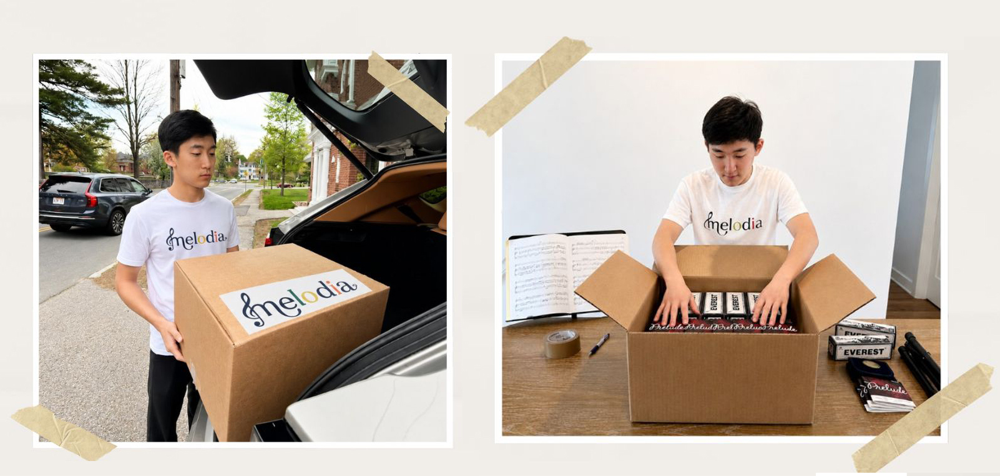
A big thank you to Soohan Cho for helping organize and transport donation supplies for our community outreach efforts.
Acts of service like these may happen behind the scenes, but they make a meaningful difference. We are proud of Soohan's willingness to give his time and support those in need.
June 3, 2026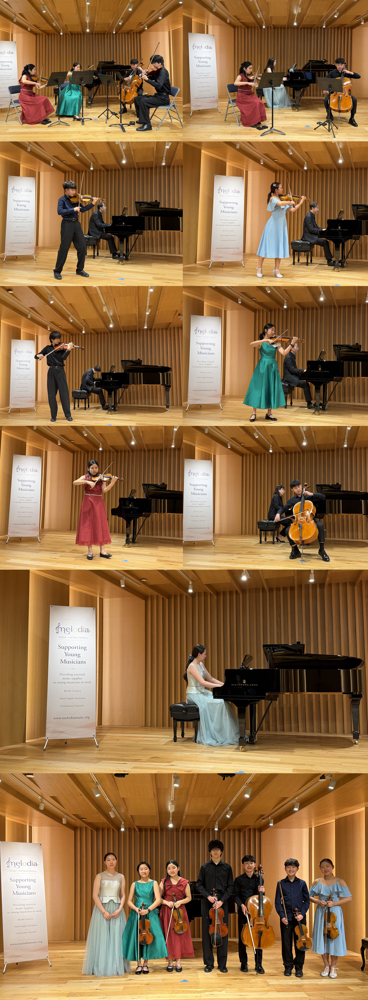
This year's Melodia Benefit Concert featured trio, quartet, and seven solo performances by talented young musicians who came together not only to share their music, but also to support a greater cause.
Through this concert, Melodia raised funds to help provide essential music supplies for young musicians from underserved communities who may not always have access to instruments, strings, sheet music, shoulder rests, rosin, and other important resources needed to continue their musical journey.
Each performance carried a special meaning beyond the stage.
The students performing tonight used their talent, time, and dedication to help create opportunities for other young musicians to continue learning and growing through music.
We are deeply grateful to everyone who attended and supported this concert. Your encouragement and generosity help Melodia continue its mission of making music more accessible to students in need and building a stronger musical community through giving and connection.
May 17, 2026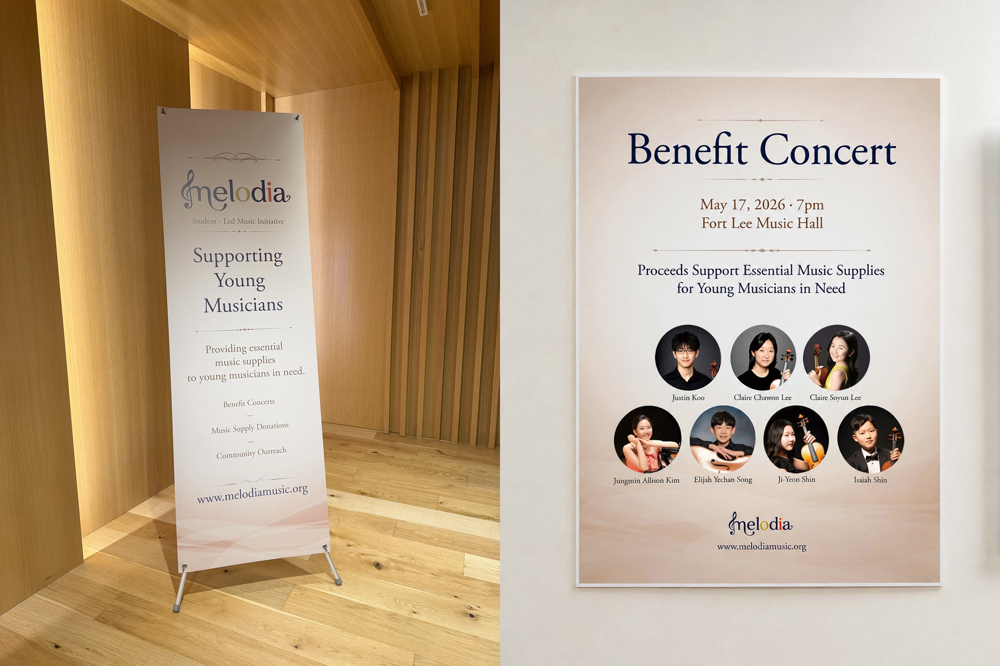
The concert day has finally arrived.
Seeing the Melodia posters and banner displayed throughout the concert hall made everything feel real for the first time. What started as a small student-led idea slowly became months of preparation, rehearsals, planning, designing, and collaboration — and tonight, it all came together.
From designing the concert materials to preparing every performance, each detail was created with care and purpose. More than just a concert, this evening represents a shared effort to support young musicians who may not always have access to essential music supplies and opportunities.
We are incredibly grateful to everyone who helped make this possible — the performers, families, supporters, and everyone attending tonight's concert.
Thank you for being part of Melodia's journey and helping us use music to give back to the community.
May 17, 2026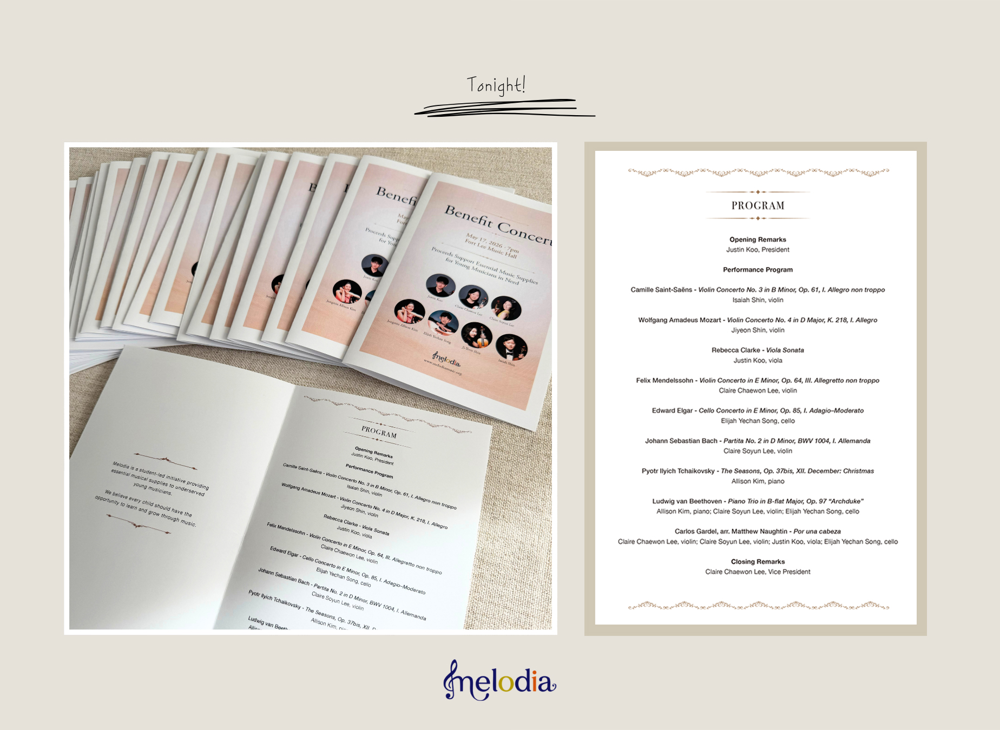
Tonight's concert program book is finally ready.
From selecting the repertoire to designing each page, this program book was created with care to reflect the heart of Melodia and the musicians participating in tonight's benefit concert.
Every performance in the program represents not only countless hours of practice, but also a shared goal of using music to support young musicians in need.
We hope this small booklet becomes more than just a concert guide — a keepsake that captures the spirit of this evening and the passion behind every performance.
Thank you to everyone supporting Melodia and joining us for this special night.
May 15, 2026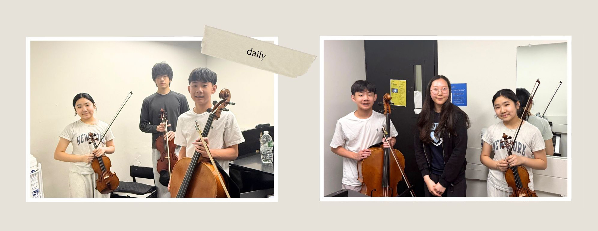
A quick snapshot after rehearsal for the upcoming Melodia benefit concert.
Despite everyone's busy schedules, these young musicians came together to rehearse, listen to one another, and grow together through music. Every rehearsal reminds us that music is not only about individual practice, but also about learning how to create something meaningful as a team.
After practice, we took a moment to capture the day together.
It's always inspiring to see the friendships, teamwork, and dedication that continue to grow with each rehearsal.
We're excited to share the music we've been preparing and grateful for everyone supporting Melodia's mission of helping student musicians through music and community.
May 10, 2026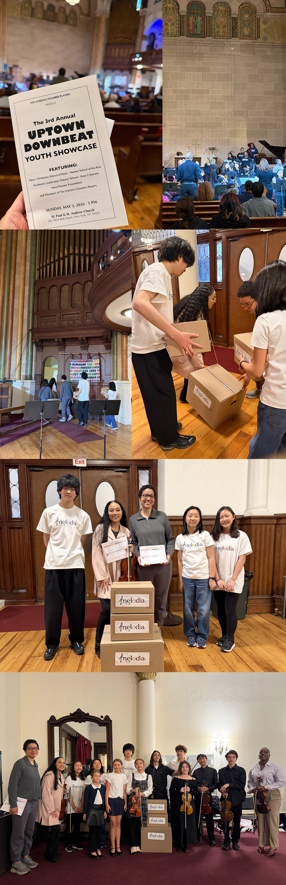
Today, Melodia had the opportunity to attend the Uptown Downbeat Youth Showcase at St. Paul & Andrew Methodist Church, hosted by Opus 118.
In preparation for this visit, our team spent time organizing and packing essential music supplies to be delivered to students. Each item was carefully arranged to ensure it could be used immediately, making the process both practical and purposeful.
At the venue, we met Ms. Amber Doniere, Director of Opus 118, and personally delivered the supplies. Being able to hand them over in person made the experience more meaningful and allowed us to connect directly with the program we are supporting.
Beyond the delivery, we stayed to attend the performance. Watching the students on stage—focused, committed, and fully engaged in their music—brought everything together. What began as preparation and behind-the-scenes work became something visible and shared through their performance.
Throughout the day, there were also quieter moments—working together to carry boxes, gathering in small groups, and being present in the space. These moments reflect the collaboration and intention behind Melodia's work.
This experience reinforced that Melodia is not only about providing supplies, but about supporting real students in real environments where music continues to grow.
We are grateful for the opportunity to be part of this day and look forward to continuing our connection with the Opus 118 community.
May 3, 2026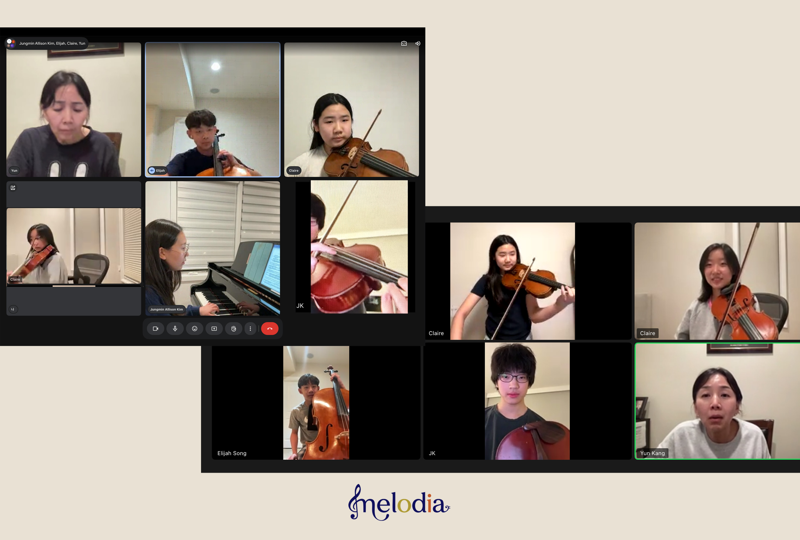
As the Melodia Benefit Concert on May 17 approaches, our students are coming together from their own spaces to continue rehearsing.
Through Zoom, they listen, adjust, and grow together—building an ensemble even from a distance. While it isn't always easy, this process has become an opportunity for deeper focus, collaboration, and understanding.
Each small effort, practiced individually, is gradually coming together into something shared—something that will take shape on stage.
This concert is more than a performance. It is a step toward creating greater access to music and supporting young musicians who need it most.
April 29, 2026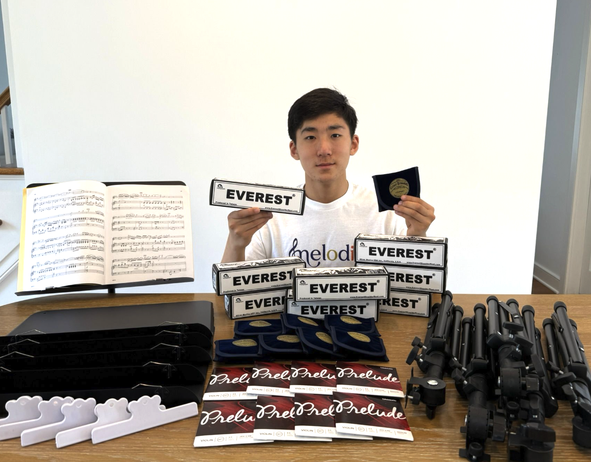
In preparation for our upcoming outreach, Soohan Cho has been sorting and organizing a new set of music supplies to be delivered to students.
Rather than simply gathering items, this process involves checking quantities, grouping materials by use, and preparing them in a way that makes distribution clear and efficient.
Each set is arranged so that students can immediately put the supplies to use—whether in practice, rehearsal, or performance—without additional barriers.
By focusing on these small but important details, Melodia continues to refine how we deliver support in ways that are practical, thoughtful, and ready to be used from the moment they are received.
April 27, 2026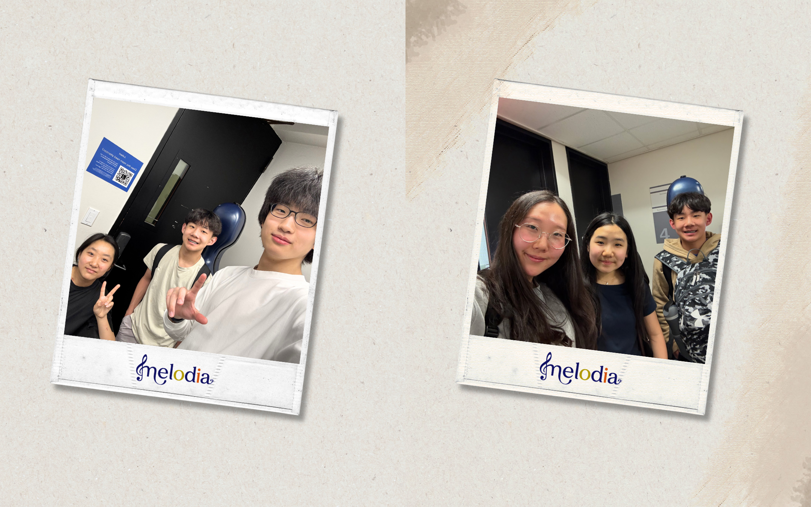
After rehearsals for the upcoming Melodia Benefit Concert, the students took a moment to gather and capture these small, candid moments together.
Practicing in small groups, they spend time not only refining their music but also building connections—learning to listen, support, and grow as an ensemble.
These moments, shared between rehearsals, reflect the spirit behind Melodia: music bringing people together, both on and off the stage.
April 25, 2026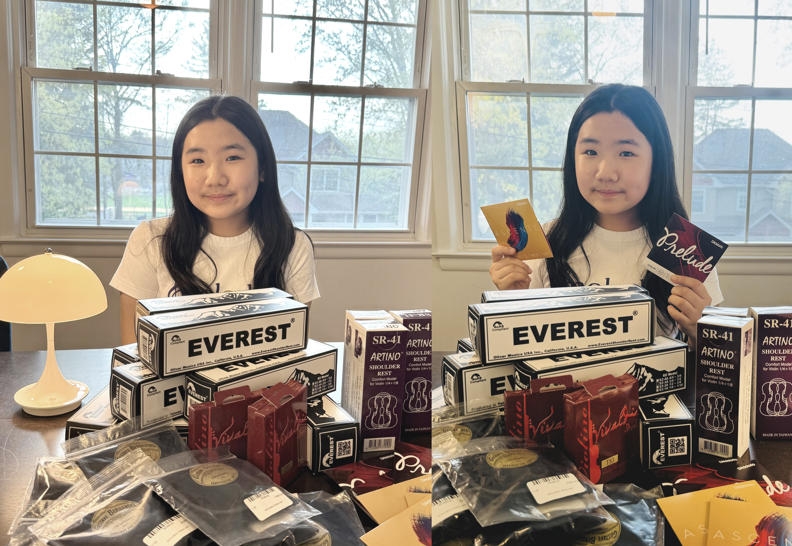
Right before they go out, everything feels complete.
Claire Soyun pauses for a moment—knowing these will soon become part of someone else's routine, practice, and sound.
Not just supplies, but the start of something new.
April 19, 2026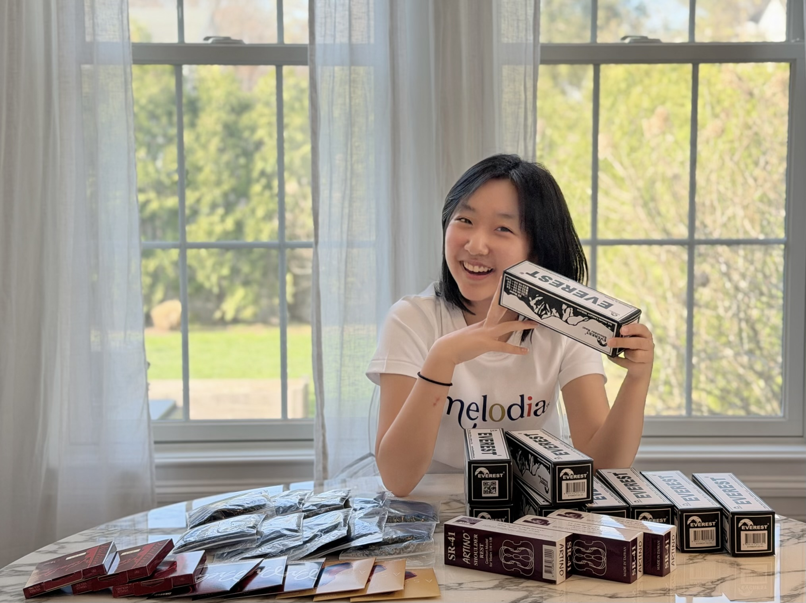
With a smile, Claire Chawon continues preparing supplies for the next step.
Each item is one step closer to reaching a young musician—getting ready, not just to be delivered, but to be used, played, and heard.
April 18, 2026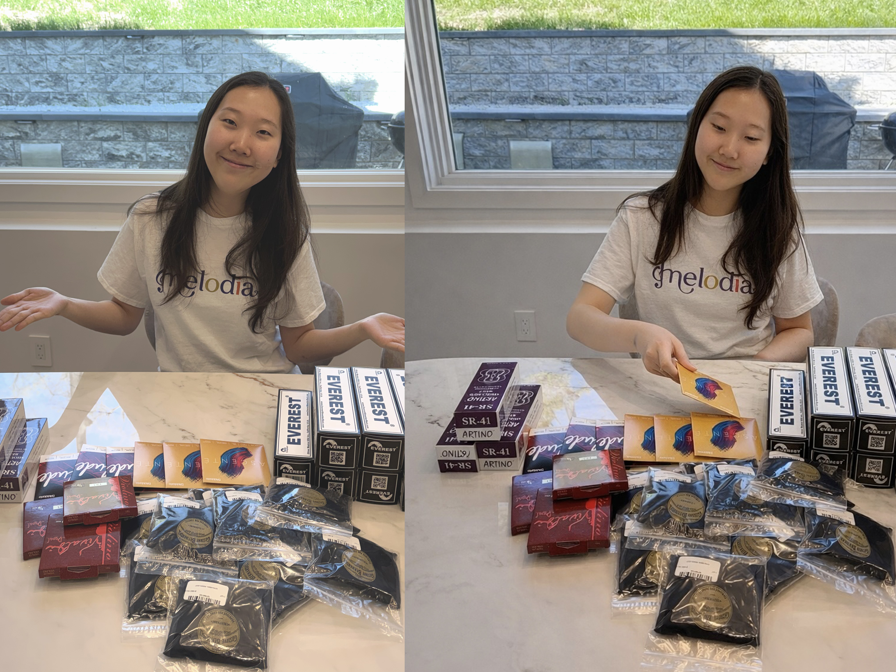
Jungmin Allison Kim is carefully organizing essential supplies, making sure each item is ready so students can continue playing without interruption.
These small essentials help create consistency — and consistency is what allows music to grow.
Melodia exists to support that continuity, so every student has the chance to keep going.
April 12, 2026
Designed by Justin Koo
“To play without passion is inexcusable.” — Beethoven
“The aim and final end of all music should be none other than the glory of God and the refreshment of the soul.”
— Johann Sebastian Bach
These pieces reflect what music means to us.
At Melodia, we believe music goes beyond technique —
it’s about expression, connection, and the ability to move people in ways words cannot.

Elijah Yechan Song spent time carefully going through each supply, checking, sorting, and preparing items one by one for upcoming deliveries.
Rather than simply packing materials, the process involved attention to detail—making sure each set was complete and ready to be used right away. From strings to small accessories, every item was handled with care.
These moments may seem simple, but they are an essential part of making music accessible. When students receive supplies that are ready and reliable, it allows them to focus on what matters most: learning, practicing, and growing.
At Melodia, it is this kind of thoughtful preparation that supports everything we do.
March 28, 2026
Ji-Yeon Shin and Isaiah Shin recently spent time organizing and preparing music supplies that will be donated to young musicians in underserved communities.
From strings and shoulder rests to other essential accessories, each item represents an opportunity for a student to continue learning, growing, and expressing themselves through music.
At Melodia, we believe that even small contributions can have a meaningful impact. Access to basic musical supplies should never be a barrier for students with passion and talent.
Through efforts like this, we hope to support the next generation of musicians and help ensure that their potential is never limited by circumstance.
March 26, 2026


Every great performance starts long before anyone steps on stage.
This week, Justin Koo spent his afternoon carefully sorting and organizing a fresh shipment of instrument supplies. These strings, rosin, and shoulder rests will soon be handed directly to students who might not otherwise have access to the tools they need to learn music.
At Melodia, we believe every child deserves the chance to experience music — regardless of their background or circumstances. It's the quiet, behind-the-scenes dedication of members like Justin that turns that belief into reality.
More to come as our team continues to prepare. Stay tuned!
March 20, 2026